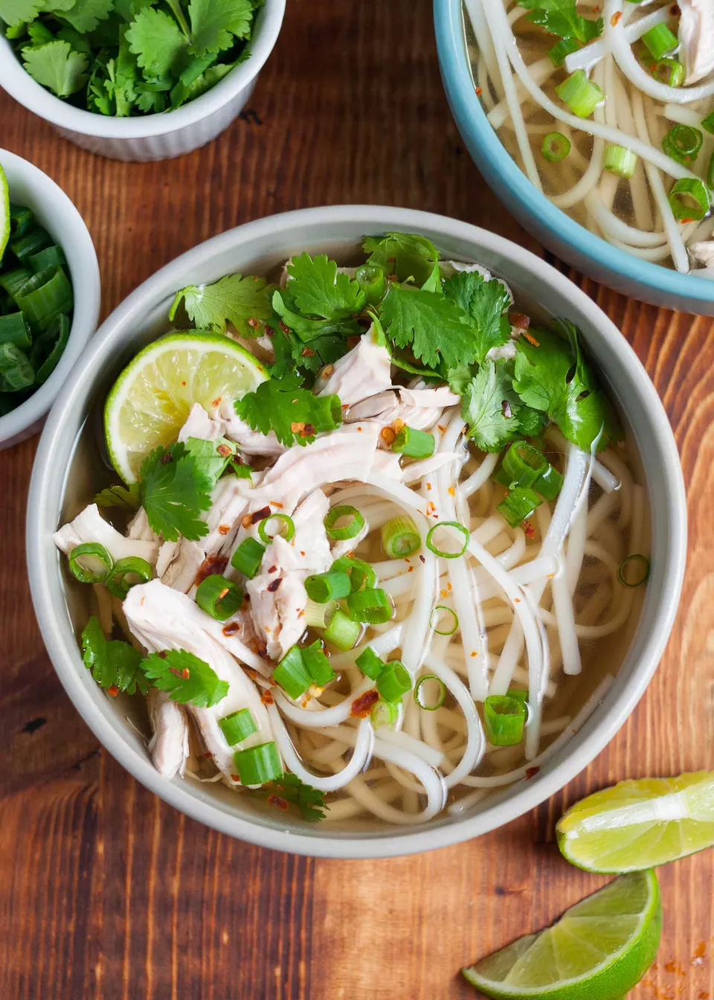

Chicken Pho
Quick weeknight chicken pho from expert Andrea Nguyen! Shortcut version of traditional Vietnamese noodle soup. 30-minutes. Gluten-free.
Quick weeknight chicken pho from expert Andrea Nguyen! Shortcut version of traditional Vietnamese noodle soup. 30-minutes. Gluten-free.